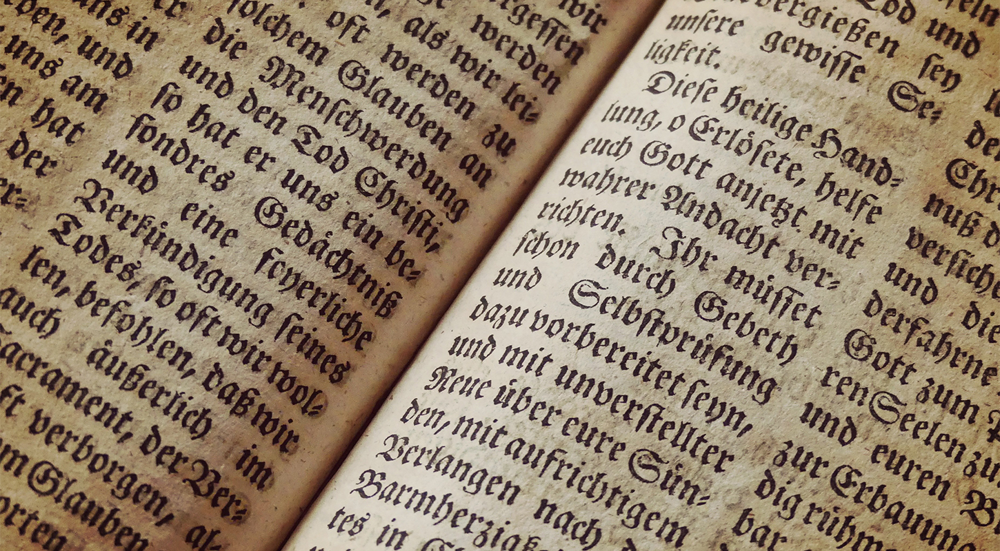
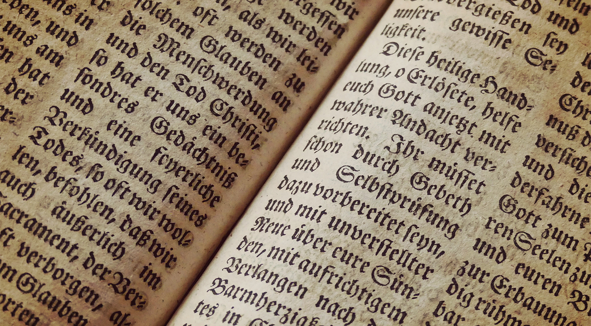

『죄와 벌』
도스토옙스키
1866년 잡지 《러시아 통보(通報)》에 발표된 세계 문학 걸작의 하나로 한국에서도 애독되는 작품이다. 근대 도시의 양상을 배경으로, 작중의 하급 관리 마르멜라도프의 말대로 ‘아무데도 갈 데가 없는’ 사람들로 가득찬 상트페테르부르크의 뒷거리가 무대이다.
줄거리
가난한 대학생 출신인 라스콜리니코프는 악랄하기로 소문난 전당포 노파 알료나와 그녀의 여동생 리자베타를 도끼로 살해하고, 계속해서 이 범죄를 자신의 사고에 맞춰 자기합리화하려고 애를 쓴다. 그러나 소냐의 가정을 알게 되고 여동생인 두냐의 혼사에 관여하게 되면서 그는 양심의 가책을 느끼게 되고 마침내 소냐의 설득과 도움에 힘입어 자수하게 된다. 짧아보일 수 있겠지만, 중간중간 주변인물들의 이야기도 삽입되는 등 실제로는 굉장히 방대한 이야기를 포함하고 있다. 사실 이는 도스토옙스키 소설의 전체적인 특징이다.
결말에 대한 비판적 의견도 있는데, 소설 속에 나타난 라스콜리니코프의 성격상 자수하는 것까지는 가능할지 몰라도 회개하는 것은 억지로 끼워 맞춘 엔딩이라고 말하기도 한다. 다만 직접적으로 라스콜리니코프가 회개했다고 언급되지는 않았으며 단순히 그런 암시를 주는 것일 뿐이기 때문에 그렇게 비판하기도 힘들다.
작품 속에서 라스콜리니코프가 노파를 죽이는 이유는 단순히 돈을 위해서가 아니다. 그는 세상 사람들이 범인(凡人, 평범한 사람)과 비범인(非凡人, 평범하지 않은 사람)으로 나뉜다고 생각하는데, 자기 자신이 비범인인지를 시험하기 위하여 죽였다고 한다. 이러한 내용을 통해 작가는 맹목적인 자기합리화와 영웅주의적 사고관을 비판하고 있다. 결국 그는 노파의 동생을 죽인 순간 자신의 논리의 모순에 빠져 반쯤 정신이 나갔다.
『나무와 불』
상극(相剋)
상극(相剋)-목, 화, 토, 금, 수의 오기의 나쁜 상성, 상대를 방해하는 관계.
상생(相生)과 상극(相剋)
상생(相生)-목, 화, 토, 금, 수의 오기(五氣)의 좋은 상성, 상대를 서로 살리는 관계.
음양오행의 상생은 목, 화, 토, 금, 수 의 오기가 차례차례 보내어 상대를 산출해가는 플러스의 관계입니다. 이것을 고래로부터 중국에서 시행해온 방법대로 설명하면 다음과 같습니다.
즉 자연계에서 불을 얻기 위한 가장 간단한 방법은 나무와 나무를 비비는 것입니다. 이것에 의해서 불이 일어납니다. 그래서 ‘목생화(木生火)’ 입니다. 물건이 타면 그 뒤에 남는 것은 재입니다. 재는 흙이 되므로 ‘화생토(火生土)’ 입니다.
광물이나 금속물의 대부분은 흙 속에 매장되어 있습니다. 때문에 사람은 흙을 파는 것에 의해 금속을 손에 넣을 수 있습니다. 그래서 흙이 금속을 낳는다고 해서 ‘토생금(土生金)’ 이 됩니다.